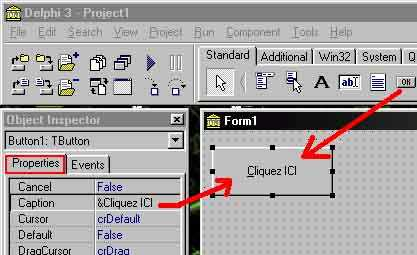

Faire son patch avec Delphi :
Dans le n° précedent de Memento, nous avons vu comment faire un patch en Turbo Pascal. Maintenant nous allons nous tournez sur un language qui lui est proche et bien plus évolué, de le Delphi.
Ce language à été crée par Borland (Imprise) dans le but de fournir aux developpeur un outil de programmation visuel orienté objet souple et puissant pour des applications Windows. Pari réussi avec la version 5 mais rassurez vous, la version 3 serat bien largement suffisante pour faire le patcheur qui suis.
Exploration :
Avant tout je vais vous montrer les bases vitales pour la manipulation de Delphi et la logique qui l'accompagne. Je vais vous montrer pas-à-pas comment créer votre premier pogramme, le classique "Hello the world!" histoire de vous montrez où il faudrat aller pour modifier les élements du patcheur :
- Quand on démarre Delphi, ca resemble à ca (sans le bouton ):

Pour mettre le Bouton, dans la barre d'outils "Standard", cliquez sur l'icône "OK" puis sur la feuille de travaille (forme) dessinez le bouton comme si vous en dessiniez un sous Paint. Ensuite dans la barre d'inspection d'objets, rester sur l'onglet "Properties", cliquez dans la zone Caption et mettez y le nom que vous voulez attribuer au bouton. Voila, le tour est jouer! Quand au caractère &, il va servir à ce que le bouton soit activer si l'on fait Alt+C sur le clavier.
Pour que ce bouton serve à quelques chose, on va lui implementer une instruction. Pour ça, double-cliquer dessus, vous allez atterrir sur une feuille de code qui comporte ceci :
procedure TForm1.Button1Click(Sender: TObject); begin end; end.
C'est entre "begin" et "end;" qu'il faut mettre le ou les instructions. Commenté ca donne :
procedure TForm1.Button1Click(Sender: TObject); // Indique que ce qui suis appartient au bouton Button1 begin // début de l'instruction
// On met le code ici
end; // fin de l'instruction end. // fin de l'ensemble de le ou des instructions
Voilà, maintenant nous allons ajouter l'instruction qui va nous permettre d'affichier une boite de dialogue :
procedure TForm1.Button1Click(Sender: TObject); // Indique que ce qui suis appartient au bouton Button1
begin // début de l'instruction
ShowMessage('Hello the Word'); // permet d'afficher une messagebox
end; // fin de l'instruction
end. // fin de l'ensemble de le ou des instructions
Une fois fait, appuyez sur F9 pour démarrer le programme, enfin cliquez sur le bouton et là une boite devrait apparâitre avec le message "Hello the Word" à l'interieur :)
Ce qu'il faut et retenir:
- Une propriété est une variable attachée à un objet (ici, c'est un bouton)
- Lorsqu' un événement se produit, il déclenche une procédure qui lui est associée. Ici, c'est la procédure TForm1.Button1Click qui est déclenché. C'est à dire la méthode Button1Click de l'objet Form1, pour être bref, le bouton que l'on a mis.
- Toute modification au niveau objet (la forme et ses composant) peut se regler en partie automatiquement grace à leur barre de propriétée.
Le Patch :
Ce passage fait, je vais maintenant vous montrer comment faire un patch en Delphi, pour ca je vais seulement mettre le code source et le commenter. Pour ce qui est de la forme, vous pouvez la prendre ici.
Voila le source, tout ce qui est en rouge peut être modifier sans problemes :
----------------------------------------[ Début ]----------------------------------------
unit code;
interface
uses
Windows, Messages, SysUtils, Classes, Graphics, Controls, Forms, Dialogs,
StdCtrls, ExtCtrls;
type
TForm1 = class(TForm)
fichier: TOpenDialog;
Button1: TButton;
Info: TButton;
Quit: TButton;
Image1: TImage;
Label1: TLabel;
Label2: TLabel;
Label3: TLabel;
Label4: TLabel;
Label5: TLabel;
Label6: TLabel;
procedure Button1Click(Sender: TObject);
procedure InfoClick(Sender: TObject);
procedure QuitClick(Sender: TObject);
private
{ Déclarations privées}
public
{ Déclarations publiques}
end;
var
Form1: TForm1;
implementation
{$R *.DFM}
procedure TForm1.Button1Click(Sender: TObject); //début du programme
Const // on déclare les constantes
FileN : String = 'Progdemerde.exe'; // nom du fichier à patcher
BytesToChange : Integer = 2; // nombre d'octets à modifier
FileS : LongInt = 564132; // taille du fichier
A : Array[1..2] of Record // ici on modifie 2 octets
A : Longint; // limite de longueur de 2147483647
B : Byte; // limite de 255 octets
End = // fin des déclarations
(
(A:$303E6;B:$90), //adresses héxadécimales à modifier et leurs octects
(A:$303E6;B:$90) //attention !! sur la derniere ligne=> pas de virgule !!);
);
Var //déclaration de variables
F : File; // F pour le fichier
Ch : Char; // Ch pour les octet à patcher
I : LongInt; // et I pour la longueur
Begin // on commence
fichier.filename := '*.exe'; // on cherche un exe
fichier.filter := FileN; // le fichier Progdemerde.exe
if fichier.execute then // si le fichier est trouve, alors...
begin // on ouvre une comande
AssignFile(F, fichier.filename); // on cible le fichier
Reset(F,1); // ouvre le fichier existant
If FileSize(F)<>FileS then // si le fichier fait une taille < ou > à celle indiquée, alors...
begin // on ouvre une comande
ShowMessage('File is incorrect size'); // on affiche le texte comme quoi ca ne fait pas la bonne taille
halt(1); // et on stoppe tout
end // fin de la fonction qui mesure la taille
else // si tout s'est bien passé, alors...
begin // on ouvre un commande
end; // on la termine pour passer à ce qui suis
For I := 1 to BytesToChange do // pour I, je boucle autant de fois qu'il y à de modifs à faire
begin // on va indiquer comment faire
Seek(F,A[I].A); //>
Ch:=Char(A[I].B); //>
Blockwrite(F,Ch,1); // inscrit les octets
end; // fin de la procedure
ShowMessage ('File successfully cracked!'); // on affiche un message de réussite
end; //>
end; // on ferme tout
//------------------------- Pour l'A propos ----------------------*
procedure TForm1.InfoClick(Sender: TObject);
begin
ShowMessage('Cracked by Static REvenge');
end;
//-------------------------- Pour Quitter ------------------------*
procedure TForm1.QuitClick(Sender: TObject);
begin
close
end;
end.
----------------------------------------[ Fin ]-----------------------------------------
Voila, c'est tout !
Pour déplacer les bouton du patch, il faut s'y prendre comme au début avec le bouton ok, le principe reste le même et si vous voulez redimenssionner la fenêtre principale, rien de plus simple, vous faites comme si c'etait une fenête d'application classique (vous mettez les curseur sur le bord à redimenssionner et tout en restant appuyer sur le bouton de gauche vous déplacez le curseur suivant les modification à faire :p)
Ensuite faite F9 pour voir si votre patch tourne bien, si oui vous pouvez le compiler en faisant Ctrl+F9.
Pour l'aspet graphique, je vous laisse vous débrouiller avec la forme, la barre d'outil et celle de propriétées. Vous verrez, ce n'est pas bien compliquer et pour ceux qui connaissent le C++ Builder ou Visual Basic, vous savez comment faire, c'est le même principe ;)
Petits conseils de derniere minute :
- Evitez de mettre des images au format BMP ou autre non compressé dans votre patch sinon il pourait devenir enorme...
- N'esitez pas à explorer chaque objet avec la barre de Propriétées, vous trouverze forcement des choses interressentes.
- Compacter vos patchs avec des programmes comme PE Compact, ASPack ou l'exellent UPX qui se trouve d'ailleur ici.
- Si vous avez les moyen ( environ 250 F, arg!!!! ) je vous conseil d'acheter le bouquin Delphi 5 au éditions S&Sm qui est vraiment très bien fait, et pour pour Delphi lui même je vour rappel que la version 3 est dejà pas mal même si elle est "vieille".